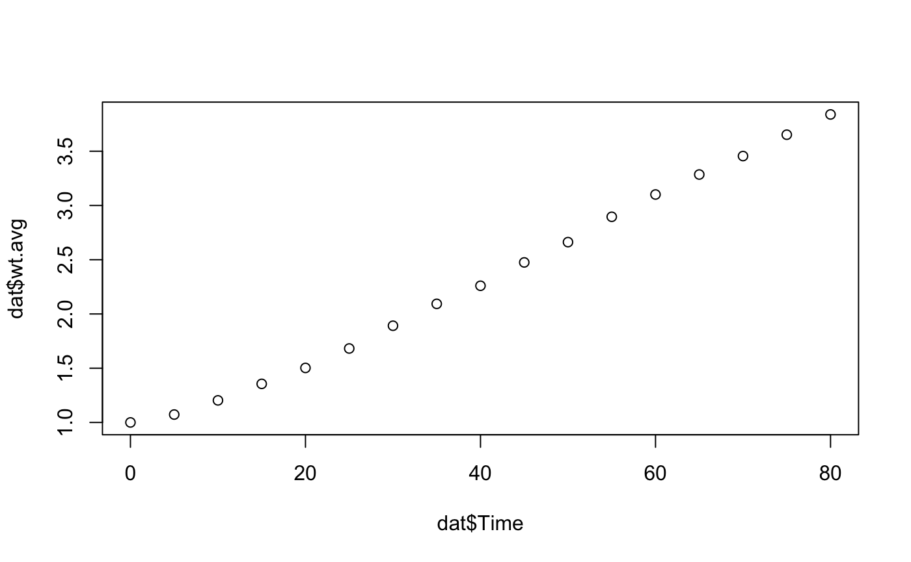
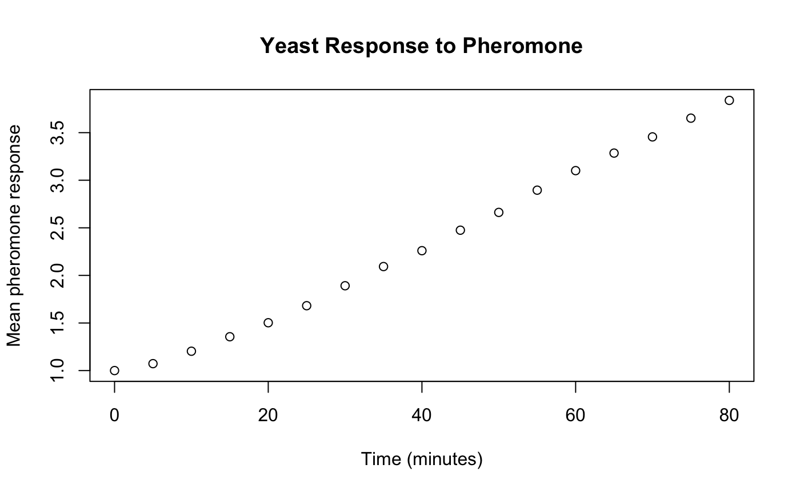
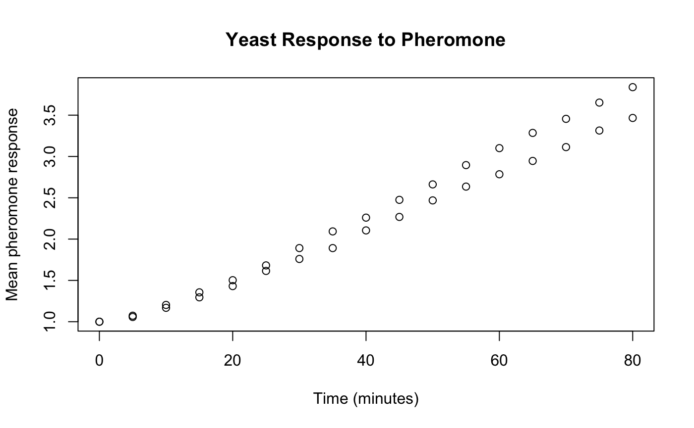
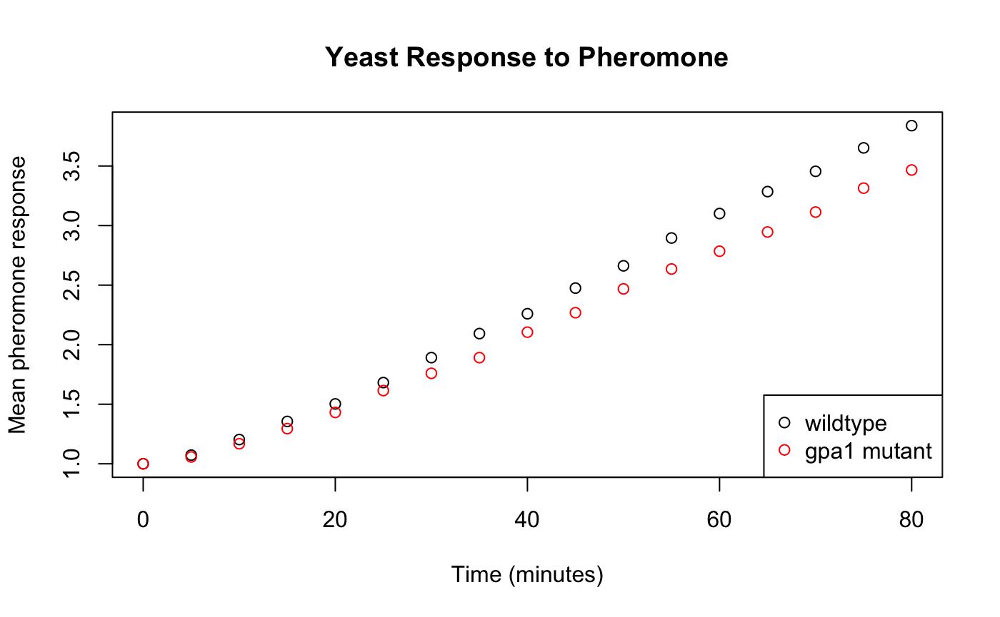

plotting.RmdYou have been provided with the data set “yeastmutants.csv”. This data set includes data on the response of budding yeast to mating pheromone over time for following three cell types: wildtype (wt), an sst2 mutant (sst2), and a gpa1 mutant (gpa1). For each mutant there is data on the mean response of a population (avg) as well as the standard deviation of the response (stdev). The data set also includes the time for each data point. Let’s import it into R and store it as dat using the read.csv function. Here the argument header is set to TRUE because the data set has a header labeling each column.
dat <- read.csv("yeastmutants.csv", header = TRUE)
Now we can take a look at our data.
class(dat) ## [1] "data.frame" dat ## Time sst2.avg sst2.stdev wt.avg wt.stdev gpa1.avg gpa1.stdev ## 1 0 1.000000 0.00000000 1.000000 0.00000000 1.000000 0.00000000 ## 2 5 1.136837 0.09389147 1.072776 0.09115671 1.057325 0.08164994 ## 3 10 1.287260 0.17363721 1.203336 0.14969849 1.168357 0.14578347 ## 4 15 1.468307 0.28511297 1.355571 0.23767208 1.295126 0.23039342 ## 5 20 1.743784 0.37276442 1.502573 0.32856109 1.431064 0.32072659 ## 6 25 1.969451 0.48747293 1.681677 0.42366003 1.614628 0.40513027 ## 7 30 2.238040 0.61199152 1.891336 0.51515710 1.759505 0.49942606 ## 8 35 2.562568 0.72005169 2.093010 0.60034859 1.891254 0.56851048 ## 9 40 2.882724 0.84589976 2.259807 0.68484877 2.105130 0.68865793 ## 10 45 3.173244 0.92524386 2.475061 0.76737933 2.268349 0.79249475 ## 11 50 3.492047 1.03084217 2.662022 0.83065122 2.468349 0.89058264 ## 12 55 3.777006 1.11674734 2.895606 0.90892127 2.635299 0.98186805 ## 13 60 4.085648 1.20400677 3.101005 0.98064725 2.784591 1.03479761 ## 14 65 4.371034 1.28763041 3.285258 1.02267586 2.946033 1.09631276 ## 15 70 4.665376 1.37728041 3.455390 1.05638858 3.113485 1.17051632 ## 16 75 4.850383 1.46856287 3.652236 1.10244107 3.314269 1.25634935 ## 17 80 5.073138 1.51458449 3.839015 1.13939773 3.466327 1.31108736 str(dat) ## 'data.frame': 17 obs. of 7 variables: ## $ Time : int 0 5 10 15 20 25 30 35 40 45 ... ## $ sst2.avg : num 1 1.14 1.29 1.47 1.74 ... ## $ sst2.stdev: num 0 0.0939 0.1736 0.2851 0.3728 ... ## $ wt.avg : num 1 1.07 1.2 1.36 1.5 ... ## $ wt.stdev : num 0 0.0912 0.1497 0.2377 0.3286 ... ## $ gpa1.avg : num 1 1.06 1.17 1.3 1.43 ... ## $ gpa1.stdev: num 0 0.0816 0.1458 0.2304 0.3207 ...
Using the class() function we can tell that dat is a data.frame. This means it is a list of vectors each with the same length. Now, let’s look closer at the data itself; we see it looks like a table with 7 columns (each with a header) and 17 rows. We can also look at the structure of this data frame using the str() function. It tells us that we have 17 observations of 7 variables and liststhe variables and their classes. Time is an integer and the rest of the variables are numeric.
Now we have imported some data, so how can we visualize it? One of the most basic ways to visualize data is the the plot() function. We can learn more about this function using ?plot. The plot function is used for generic X-Y plotting. It requires two arguments x and y, which represent the x and y coordinates for the plot respectively. Then the function also has lots of optional arguments. type is used indicate what type of plot should be drawn; all of the options for this are listed in the help menu. main and sub are used to give the plot an overall and a subtitle, respectively. xlab and ylab are used to label the x and y axes. Finally, asp is used to assign the y/x aspect ratio. There are other arguments that can be passed to plot(). You can google these if you’re interested or use ?par; one we will be particuarly interested in is col which assigns a color.
Now let’s do a basic plotting example. We want to plot the average response of wildtype cells versus time. We will need to subset the average response of wt and time from the data.frame and plot them. We can do this using the $ operator.
plot(x = dat$Time, y = dat$wt.avg)

We also want to give the plot an appropriate title and axis labels.
plot(x = dat$Time, y = dat$wt.avg, main = "Yeast Response to Pheromone", xlab = "Time (minutes)", ylab = "Mean pheromone response")

In order to add more data sets to the existing plot we need to use the lines or the points functions. The use of the points function to compare the response of wildtype to the gpa1 mutant is shown below.
plot(x = dat$Time, y = dat$wt.avg, main = "Yeast Response to Pheromone", xlab = "Time (minutes)", ylab = "Mean pheromone response") points(x = dat$Time, y = dat$gpa1.avg)

We can also change the color of the points and add a legend to be able to tell which is which. The legend is a little more complicated. We first specify the location "bottomright", then we include a vector with the label for each legend entry c("wildtype","gpa1 mutant"). lty = 0 indicates that the line type is zero, or there is not line. pch = 1 indicates the point character is 1 - the open circle. Finally, we say that the colors should be black and red respectively with col = c("black","red").
plot(x = dat$Time, y = dat$wt.avg, main = "Yeast Response to Pheromone", xlab = "Time (minutes)", ylab = "Mean pheromone response") points(x = dat$Time, y = dat$gpa1.avg, col = "red") legend(x = "bottomright", legend = c("wildtype","gpa1 mutant"), lty = 0, pch = 1, col = c("black","red"))

The following questions are to be worked on in a small group. Always make sure that your plots have proper titles and axis labels.
Plot the average pheromone response for all three cell types. Plot them as lines, not points (remember: the argument type for plot and the function lines which is similar to points). Make each cell type a different color and create a legend to match.
Noise in cellular response is often quantified by the coefficient of variation (CV) because it normalizes the standard deviation for differences in the mean. CV is defined as \(CV=\sigma/\mu\) where \(\sigma\) is the standard deviation and \(\mu\) is mean. Create new variables in the data frame for the CV for each cell type. (Rememeber: you can use subsetting to assign new variables). Then create a plot of the CV for all cell types following the same guidelines as in question 1.
There are many things you can do with plotting in R. The following problems will give you a chance to explore some of the many plotting functions available including hist(), barplot(), and boxplot()
The following questions are to be done for homework. They require the data in the file “heights.csv” which includes the gender, height, handedness, and eye color. To answer these questions you will use different types of plots including histograms, bar plots, and box plots. You can learn about all the required arguments by using the help section.
Make a histogram of height using the hist() function. Include an appropriate title and axis labels.
Now make the same histogram but include 20 bins and make it your favorite color.
Make a bar chart of how many people are left or right handed using the barplot() function. Hint: dat$Handedness[dat$Handedness=="Left"] will return a vector including on those entries where dat$Handedness is "Left" and length() will return the length of a vector.
Make a bar chart of how many people have the following eye colors: blue, brown, other. Make the color of each bar correspond to the eye color (you can choose any color for other).
Make a box plot of the height using the boxplot() function.